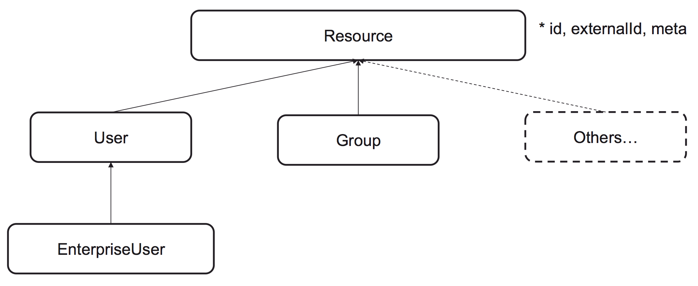

System for Cross-domain Identity Management
SCIM 2, the open API for managing identities is now complete and published under the IETF.
Overview
The System for Cross-domain Identity Management (SCIM) specification is designed to make managing user identities in cloud-based applications and services easier. The specification suite seeks to build upon experience with existing schemas and deployments, placing specific emphasis on simplicity of development and integration, while applying existing authentication, authorization, and privacy models. Its intent is to reduce the cost and complexity of user management operations by providing a common user schema and extension model, as well as binding documents to provide patterns for exchanging this schema using standard protocols. In essence: make it fast, cheap, and easy to move users in to, out of, and around the cloud.
Information on this overview page is not normative.
Model
SCIM 2.0 is built on a object model where a Resource is the common denominator and all SCIM objects are derived from it. It has id, externalId and meta as attribute and RFC7643 defines User, Group and EnterpriseUser that extends the common attributes.
Example User
This is an example of how user data can be encoded as a SCIM object in JSON.
While this example does not contain the full set of attributes available, notice the different types of data that can be used to create SCIM objects. Simple types like strings for id, username, etc. Complex types, i.e. attributes that have sub-attributes, for name and address. Multivalued types for e-mail, phonenumber, address, etc.
{
"schemas": ["urn:ietf:params:scim:schemas:core:2.0:User"],
"id":"2819c223-7f76-453a-919d-413861904646",
"externalId":"bjensen",
"meta":{
"resourceType": "User",
"created":"2011-08-01T18:29:49.793Z",
"lastModified":"2011-08-01T18:29:49.793Z",
"location":"https://example.com/v2/Users/2819c223...",
"version":"W\/\"f250dd84f0671c3\""
},
"name":{
"formatted": "Ms. Barbara J Jensen, III",
"familyName": "Jensen",
"givenName": "Barbara",
"middleName": "Jane",
"honorificPrefix": "Ms.",
"honorificSuffix": "III"
},
"userName":"bjensen",
"phoneNumbers":[
{
"value":"555-555-8377",
"type":"work"
}
],
"emails":[
{
"value":"bjensen@example.com",
"type":"work",
"primary": true
}
]
}
Example Group
In addition to users, SCIM includes the defintions of groups. Groups are used to model the organizationational structure of provisioned resources. Groups can contain users or other groups.
{
"schemas": ["urn:ietf:params:scim:schemas:core:2.0:Group"],
"id":"e9e30dba-f08f-4109-8486-d5c6a331660a",
"displayName": "Tour Guides",
"members":[
{
"value": "2819c223-7f76-453a-919d-413861904646",
"$ref": "https://example.com/v2/Users/2819c223-7f76-453a-919d-413861904646",
"display": "Babs Jensen"
},
{
"value": "902c246b-6245-4190-8e05-00816be7344a",
"$ref": "https://example.com/v2/Users/902c246b-6245-4190-8e05-00816be7344a",
"display": "Mandy Pepperidge"
}
],
"meta": {
"resourceType": "Group",
"created": "2010-01-23T04:56:22Z",
"lastModified": "2011-05-13T04:42:34Z",
"version": "W\/\"3694e05e9dff592\"",
"location": "https://example.com/v2/Groups/e9e30dba-f08f-4109-8486-d5c6a331660a"
}
}
Operations
For manipulation of resources, SCIM provides a REST API with a rich but simple set of operations, which support everything from patching a specific attribute on a specific user to doing massive bulk updates:
- Create: POST https://example.com/{v}/{resource}
- Read: GET https://example.com/{v}/{resource}/{id}
- Replace: PUT https://example.com/{v}/{resource}/{id}
- Delete: DELETE https://example.com/{v}/{resource}/{id}
- Update: PATCH https://example.com/{v}/{resource}/{id}
- Search: GET https://example.com/{v}/{resource}?filter={attribute}{op}{value}&sortBy={attributeName}&sortOrder={ascending|descending}
- Bulk: POST https://example.com/{v}/Bulk
Discovery
To simplify interoperability, SCIM provides three end points to discover supported features and specific attribute details:
- GET /ServiceProviderConfig
Specification compliance, authentication schemes, data models.
- GET /ResourceTypes
An endpoint used to discover the types of resources available.
- GET /Schemas
Introspect resources and attribute extensions.
Create Request
To create a resource, send an HTTP POST request to the resource's respective end point. In the example below we see the creation of a User.
As can be seen in this and later examples the URL contains a version number so that different versions of the SCIM API can co-exist. Available versions can be dynamically discovered via the ServiceProviderConfig end point.
POST /v2/Users HTTP/1.1 Accept: application/json Authorization: Bearer h480djs93hd8 Host: example.com Content-Length: ... Content-Type: application/json { "schemas":["urn:ietf:params:scim:schemas:core:2.0:User"], "externalId":"bjensen", "userName":"bjensen", "name":{ "familyName":"Jensen", "givenName":"Barbara" } }
Create Response
A response contains the created Resource and HTTP code 201 to indicate that the Resource has been created successfully. Note that the returned user contains more data then was posted, id and meta data have been added by the service provider to make a complete User resource. A location header indicates where the resource can be fetched in subsequent requests.
HTTP/1.1 201 Created Content-Type: application/scim+json Location: https://example.com/v2/Users/2819c223-7f76-453a-919d-413861904646 ETag: W/"e180ee84f0671b1" { "schemas":["urn:ietf:params:scim:schemas:core:2.0:User"], "id":"2819c223-7f76-453a-919d-413861904646", "externalId":"bjensen", "meta":{ "resourceType":"User", "created":"2011-08-01T21:32:44.882Z", "lastModified":"2011-08-01T21:32:44.882Z", "location": "https://example.com/v2/Users/2819c223-7f76-453a-919d-413861904646", "version":"W\/\"e180ee84f0671b1\"" }, "name":{ "familyName":"Jensen", "givenName":"Barbara" }, "userName":"bjensen" }
Get Request
Fetching resources is done by sending HTTP GET requests to the desired Resource end point, as in this example.
GET /v2/Users/2819c223-7f76-453a-919d-413861904646 HTTP/1.1 Host: example.com Accept: application/scim+json Authorization: Bearer h480djs93hd8
Create Response
The response to a GET contains the Resource. The Etag header can, in subsequent requests, be used to prevent concurrent modifications of Resources.
HTTP/1.1 201 Created HTTP/1.1 Content-Type: application/scim+json Location: https://example.com/v2/Users/2819c223-7f76-453a-919d-413861904646 ETag: W/"e180ee84f0671b1" { "schemas": ["urn:ietf:params:scim:schemas:core:2.0:User"], "id":"2819c223-7f76-453a-919d-413861904646", "externalId":"bjensen", "meta":{ "resourceType": "User", "created":"2011-08-01T18:29:49.793Z", "lastModified":"2011-08-01T18:29:49.793Z", "location":"https://example.com/v2/Users/2819c223...", "version":"W\/\"f250dd84f0671c3\"" }, "name":{ "formatted": "Ms. Barbara J Jensen, III", "familyName": "Jensen", "givenName": "Barbara", "middleName": "Jane", "honorificPrefix": "Ms.", "honorificSuffix": "III" }, "userName":"bjensen", "phoneNumbers":[ { "value":"555-555-8377", "type":"work" } ], "emails":[ { "value":"bjensen@example.com", "type":"work", "primary": true } ] }
Filter Request
In addition to getting single Resources it is possible to fetch sets of Resources by querying the Resource end point without the id of a specific Resource. Typically, a fetch request will include a filter to be applied to the Resources. SCIM has support for the filter operations equals, contains, starts with, and more. In addition to filtering the response it is also possible to ask the service provider to sort the Resources in the response.
In addition to filtering the response it is also possible to ask the service provider to sort the Resources in the response, return specific attributes of the resources, and return only a subset of the resources.
- https://example.com/{resource}?filter={attribute} {op} {value} & sortBy={attributeName}&sortOrder={ascending|descending}&attributes={attributes}
- https://example.com/Users?filter=title pr and userType eq “Employee”&sortBy=title&sortOrder=ascending&attributes=title,username
Filter Response
The response to a GET request is a list of matching resources:
{
"schemas":["urn:ietf:params:scim:api:messages:2.0:ListResponse"],
"totalResults":2,
"Resources":[
{
"id":"c3a26dd3-27a0-4dec-a2ac-ce211e105f97",
"title":"Assistant VP",
"userName":"bjensen"
},
{
"id":"a4a25dd3-17a0-4dac-a2ac-ce211e125f57",
"title":"VP",
"userName":"jsmith"
}
]
}
Specification
SCIM 2.0
SCIM 2.0 is released as RFC7642, RFC7643 and RFC7644 under IETF in September 2015.
-
RFC7643 - SCIM: Core Schema
The Core Schema provides a platform-neutral schema and extension model for representing users and groups.
-
RFC7644 - SCIM: Protocol
The SCIM Protocol is an application-level, REST protocol for provisioning and managing identity data on the web.
-
RFC7642 - SCIM: Definitions, Overview, Concepts, and Requirements
This document lists the user scenarios and use cases of System for Cross-domain Identity Management (SCIM).
Related documents and extensions.
-
draft-ansari-scim-soft-delete
This document specifies a profile that handles soft delete of Users on SCIM Service Providers.
-
draft-hunt-scim-notify
In a SCIM environment, changes to resources may be requested by multiple parties. As time goes by an interested subscriber may wish to be informed about resource state changes that are occurring at the SCIM service provider. This specification defines a hub notification service that can be used to publish and distribute events to interested registered subscribers.
-
draft-hunt-scim-password-mgmt
This specification defines a set of password and account status extensions for managing passwords and password usage (e.g. failures) and other related session data. The specification defines new ResourceTypes that enable management of passwords and account recovery functions.
-
draft-wahl-scim-jit-profile
This document specifies a profile of the System for Cross-Domain Identity Management Protocol (SCIM) for use by servers which rely upon just-in-time provisioning patterns in a protocol (such as SAML) to create user accounts, and need an additional channel to be notified of changes to user accounts.
-
SCIM and vCard mapping
This document defines a mapping between SCIM and vCard.
-
draft-grizzle-scim-pam-ext
This document contains a SCIM 2.0 extension for Privileged Access Management, which includes extensions to the core User and Group objects, and new resource types and schemas for standard Privileged Access Management constructs. This extension is intended to provide greater interoperability between PAM software and clients, a common language for PAM concepts, and a baseline that can be further extended to support more complex PAM requirements.
SCIM 1.1
Second official release of the SCIM specification, released in July 2012. Compatible with 1.0 and contains cleanups and clarifications on issues found during interop testing.
-
Core Schema
The Core Schema provides a platform-neutral schema and extension model for representing users and groups in JSON and XML formats.
-
REST API
The SCIM Protocol is an application-level, REST protocol for provisioning and managing identity data on the web.
SCIM 1.0 - Deprecated
First official release of the SCIM specification, released in December 2011.
-
Scenarios Doc - draft 4
The senario document was created to guide the development of the specification and is not normative.
-
Core Schema
The Core Schema provides a platform-neutral schema and extension model for representing users and groups in JSON and XML formats.
-
REST API
The SCIM Protocol is an application-level, REST protocol for provisioning and managing identity data on the web.
-
SAML 2.0 Binding - draft 1
Defines a binding of SCIM schema to SAML messages and assertions.
{kind=link}
{kind=link}
{kind=link}
{kind=link}
{kind=link}
{kind=link}
{kind=link}
{kind=link}
{kind=link}
{kind=link}
SCIM 2.0 Implementations
Know of an implementation that should be listed?
Submit a pull request to the github repository or send an email with information about name, type, license, developer, URL and if it's a SCIM 1.1 or SCIM 2.0 implementation.
| Project Name | Client | Server | Open Source | Developer | Link |
|---|
SCIM 1.1 Implementations
Know of an implementation that should be listed?
Submit a pull request to the github repoository or send an email with information about name, type, license, developer, URL and if it's a SCIM 1.1 or SCIM 2.0 implementation.
| Project Name | Client | Server | Open Source | Developer | Link |
|---|